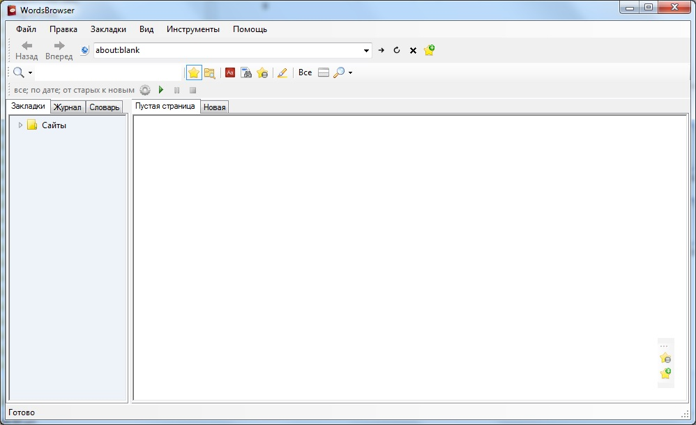
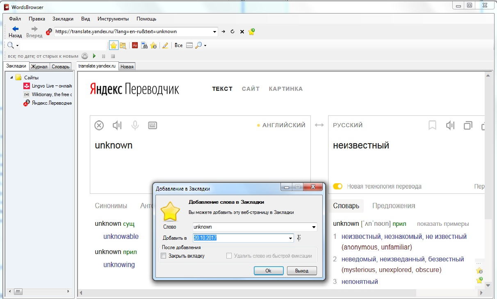
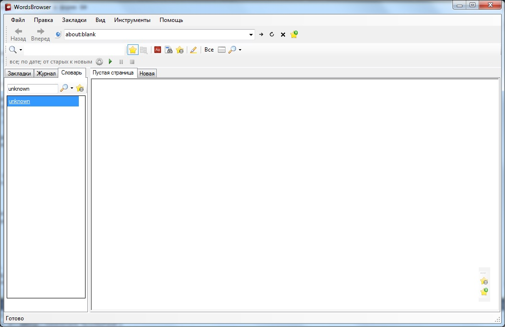
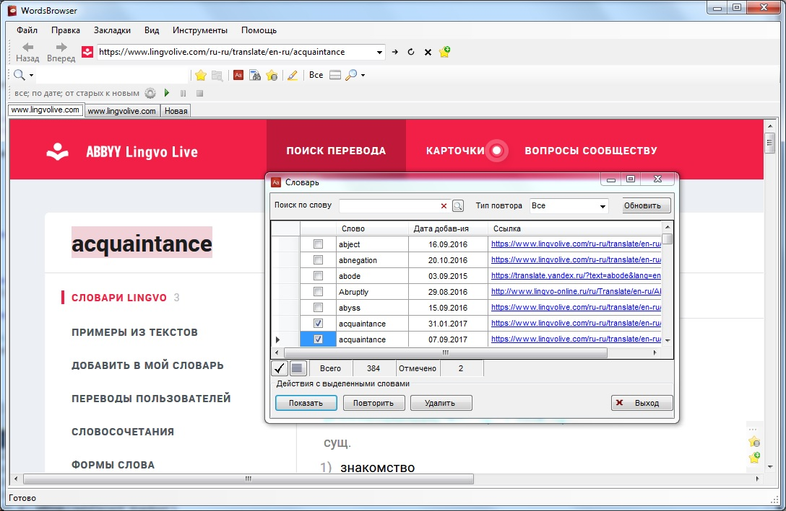
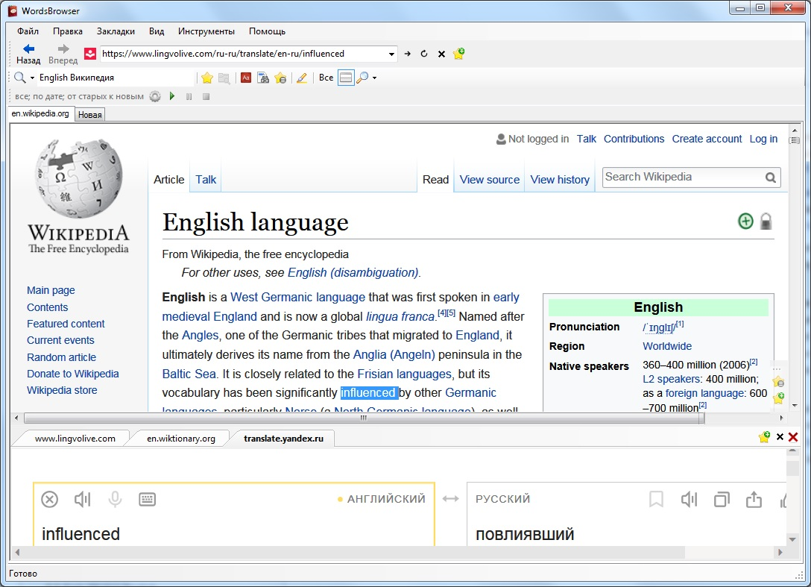
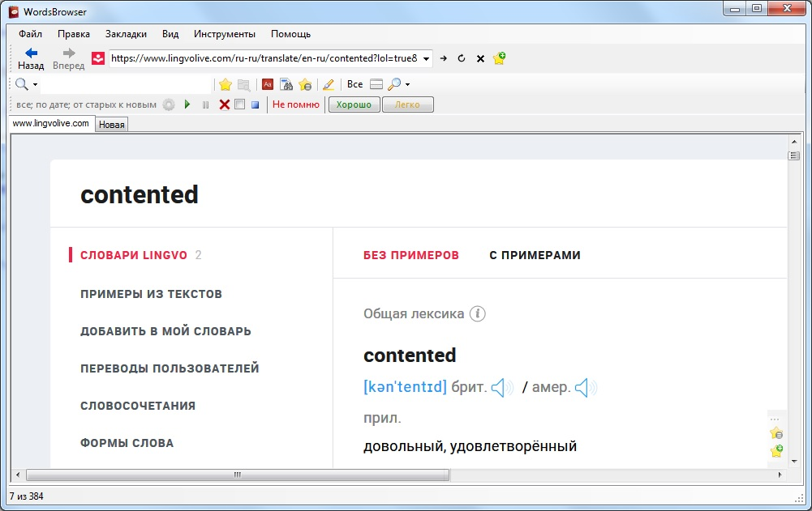
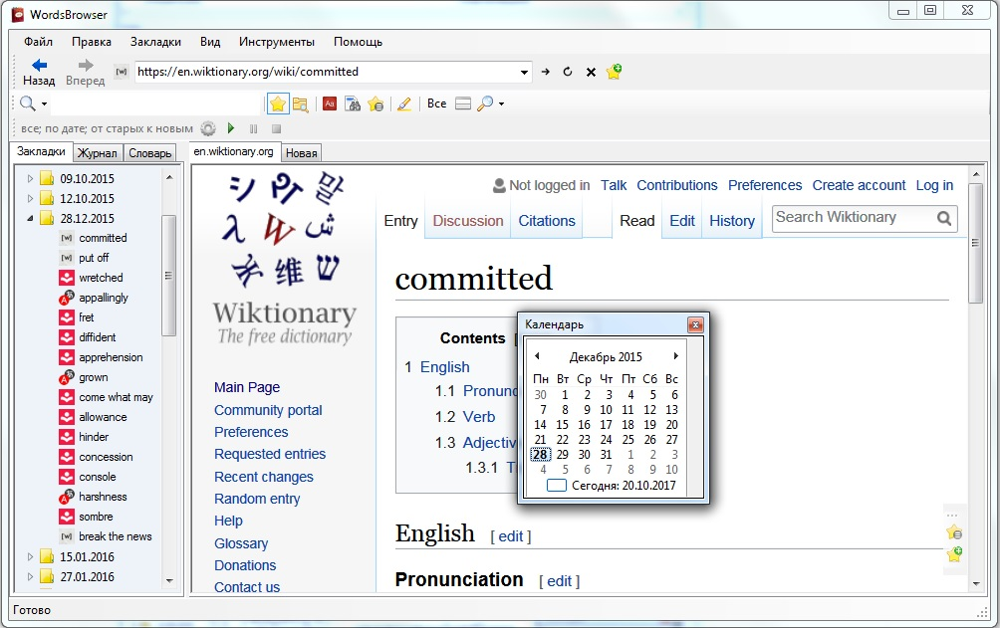

При открытии программы WordsBrowser 
Добавление слова в Закладки 
Работа со Словарем на боковой панели закладок 
Работа со Словарем, открытие слов во вкладках 
Открытие выделенного слова во вкладках на странице с текстом 
Повтор слов на паузе для отслеживаемого слова 
Навигация по датам с помощью Календаря 